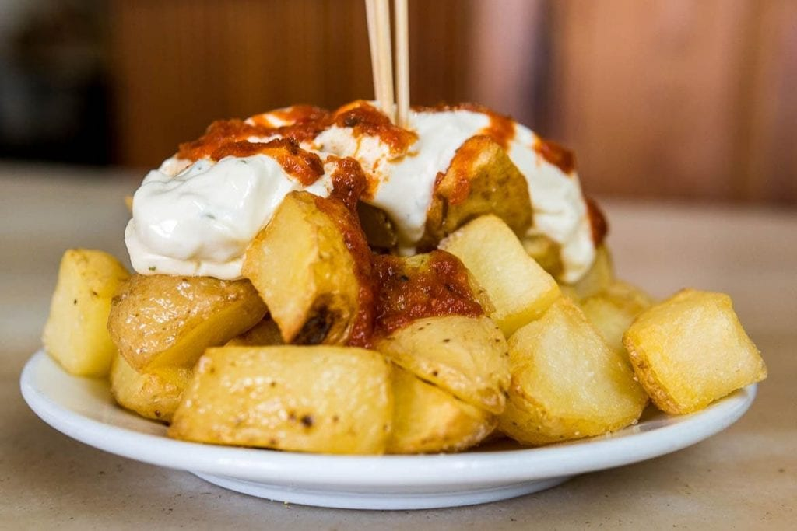

Receita Destaque
Patatas Bravas
São batatas fritas no azeite, cortadas de forma irregular e geralmente acompanhadas de salsa brava, um molho picante. Em algumas regiões da Espanha, esse molho é substituído por alioli, um tipo de maionese feito com alho e azeite de oliva. É comum servir Patatas Bravas como tapas, que são os petiscos da Espanha.
Veja MaisReceitas Populares
Tortilha espanhola
A tortilha espanhola é uma omelete de batatas e ovos, tradicional na Espanha. Simples e saborosa, é feita com batatas fatiadas, cebolas e ovos, cozidos lentamente até dourar. Pode ser servida quente ou fria, como prato principal ou aperitivo, destacando a autenticidade da culinária espanhola.

Azeitona a espanhola
A azeitona espanhola é um ícone culinário, apreciada por seu sabor rico e variedade. Usada em tapas, saladas e como petisco, pode ser verde ou preta, muitas vezes recheada ou marinada. Essencial na dieta mediterrânea, traz o autêntico sabor da Espanha a qualquer refeição.
Paella espanhola
A paella espanhola é um prato icônico, originário de Valência. Feita com arroz, açafrão, frutos do mar, frango e legumes, é cozida lentamente até que os sabores se misturem. Cada garfada traz a essência da Espanha, em uma combinação rica e aromática, perfeita para compartilhar.